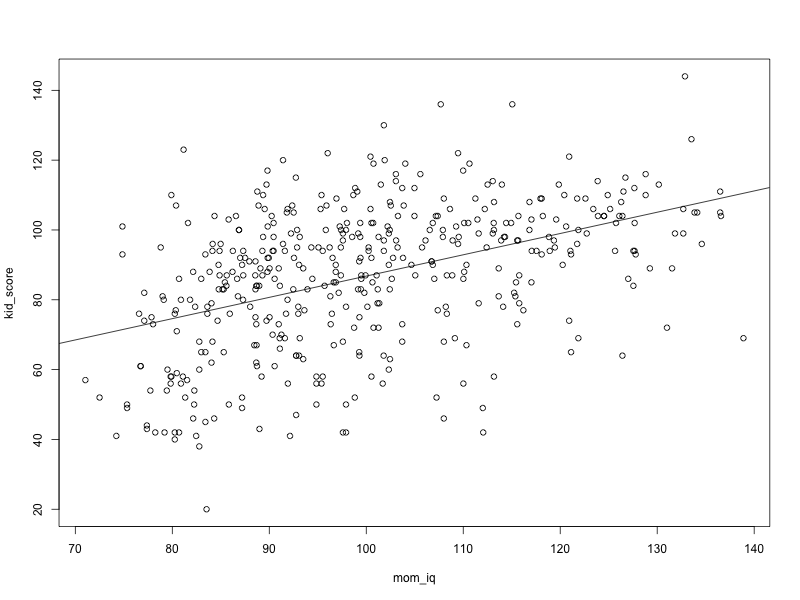
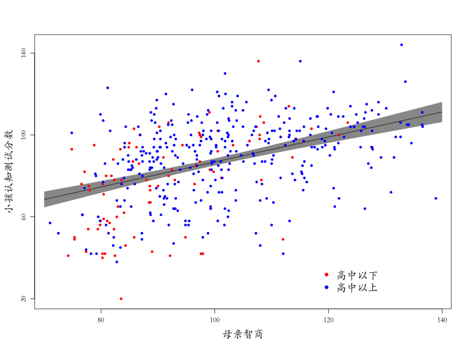
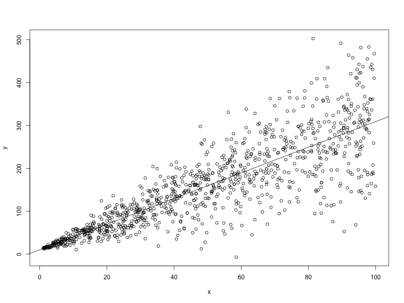
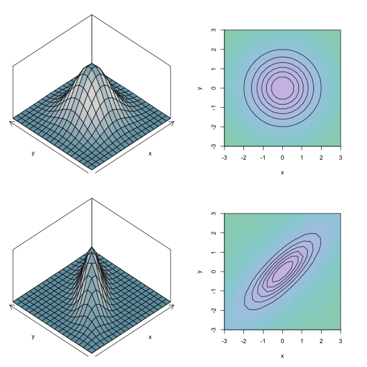
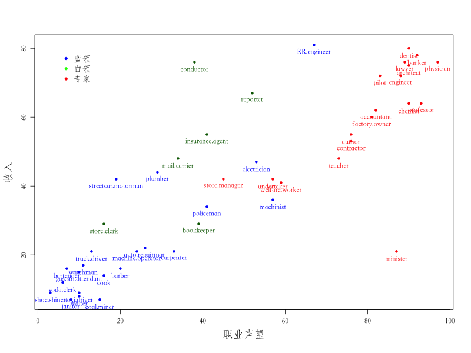
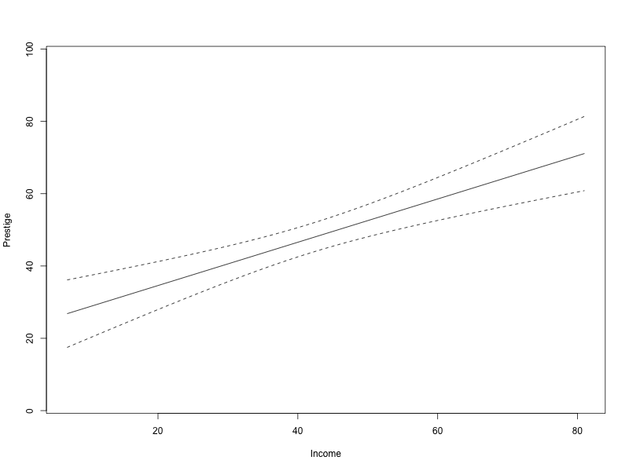
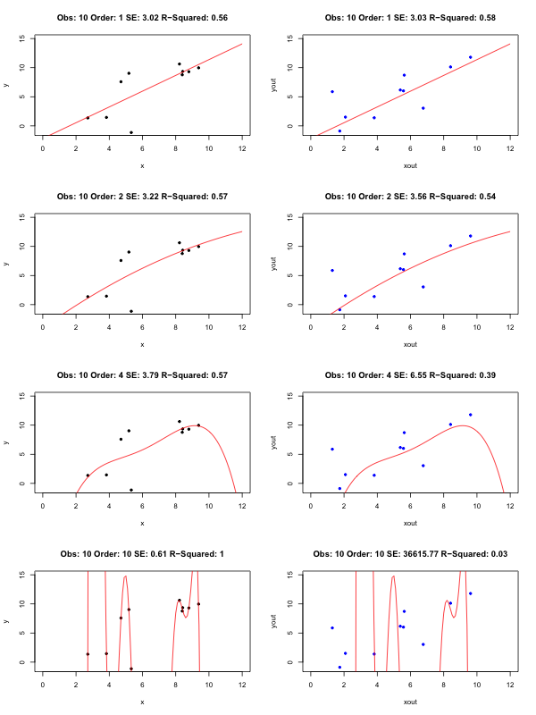

线性回归
1 线性回归基础
1.1 R语言的list对象
list对象可以用来“包裹”完全不同类型的变量对象，甚至可以是list对象，可以方便地将不同类型的参数传递给函数，或者获取一些不同类型对象组成的结果。
mylist <- list(a=1, b=c(1,2), c="hello") mylist$a mylist$b mylist$c mylist[3] mylist[["c"]]
[1] 1 [1] 1 2 [1] "hello" $c [1] "hello" [1] "hello"
1.2 lm()函数的用法
先来一个假想的例子
x <- 1:100 y <- 3*x + rnorm(100) res <- lm(y~x) # 回归结果汇总 summary(res)
Call:
lm(formula = y ~ x)
Residuals:
Min 1Q Median 3Q Max
-2.56106 -0.54423 0.05903 0.63813 1.98725
Coefficients:
Estimate Std. Error t value Pr(>|t|)
(Intercept) -0.135401 0.178537 -0.758 0.45
x 3.004036 0.003069 978.726 <2e-16 ***
---
Signif. codes: 0 ‘***’ 0.001 ‘**’ 0.01 ‘*’ 0.05 ‘.’ 0.1 ‘ ’ 1
Residual standard error: 0.886 on 98 degrees of freedom
Multiple R-squared: 0.9999, Adjusted R-squared: 0.9999
F-statistic: 9.579e+05 on 1 and 98 DF, p-value: < 2.2e-16
提取回归相关结果
# 提取回归系数 coef(res) # 回归方程的残差 res$residuals resid(res) # 提取协方差矩阵x <- 1:100 y <- 3*x + rnorm(100) res <- lm(y~x) # 回归结果汇总 summary(res) # 提取回归系数 coef(res) # 回归方程的残差 res$residuals resid(res) # 提取协方差矩阵 vcov(res) # 计算标准误 sqrt(diag(vcov(res))) # 提取拟合值 predict(res) # 获取自变量新数据的预测值，预测区间，置信区间 xnew <- data.frame(x=seq(-1,1,1)) predict(res, newdata=xnew, interval = "prediction") predict(res, newdata=xnew, interval = "confidence")
1.3 回归示例：母亲教育与子女认知能力
数据集：母亲教育与子女认知能力
| 变量 | 描述 |
|---|---|
| kidscore | 3-4岁小孩的认知测试分数 |
| mom_hs | 母亲是否上过高中 |
| mom_iq | 母亲的智商 |
1.4 回归示例：单个预测变量
- 采用母亲的智商预测3到4岁小孩的认知测试分数
library("foreign") # 清除内存 rm(list=ls()) # 载入数据 kidiq <- read.dta("kidiq.dta") attach(kidiq) fit0 <- lm(kid_score~mom_iq) summary(fit0)
Call:
lm(formula = kid_score ~ mom_iq)
Residuals:
Min 1Q Median 3Q Max
-56.753 -12.074 2.217 11.710 47.691
Coefficients:
Estimate Std. Error t value Pr(>|t|)
(Intercept) 25.79978 5.91741 4.36 1.63e-05 ***
mom_iq 0.60997 0.05852 10.42 < 2e-16 ***
---
Signif. codes: 0 ‘***’ 0.001 ‘**’ 0.01 ‘*’ 0.05 ‘.’ 0.1 ‘ ’ 1
Residual standard error: 18.27 on 432 degrees of freedom
Multiple R-squared: 0.201, Adjusted R-squared: 0.1991
F-statistic: 108.6 on 1 and 432 DF, p-value: < 2.2e-16
1.5 回归示例：多个预测变量
- 自变量：母亲是否上过高中、母亲的智商
- 解释系数和截距
fit1 <- lm (kid_score ~ mom_hs + mom_iq)
summary(fit1)
Call:
lm(formula = kid_score ~ mom_hs
mom_iq)
Residuals:
Min 1Q Median 3Q Max
-52.873 -12.663 2.404 11.356 49.545
Coefficients:
Estimate Std. Error t value Pr(>|t|)
(Intercept) 25.73154 5.87521 4.380 1.49e-05 ***
mom_hs 5.95012 2.21181 2.690 0.00742 **
mom_iq 0.56391 0.06057 9.309 < 2e-16 ***
---
Signif. codes: 0 ‘***’ 0.001 ‘**’ 0.01 ‘*’ 0.05 ‘.’ 0.1 ‘ ’ 1
Residual standard error: 18.14 on 431 degrees of freedom
Multiple R-squared: 0.2141, Adjusted R-squared: 0.2105
F-statistic: 58.72 on 2 and 431 DF, p-value: < 2.2e-16
- 系数的解释：保持其他变量不变，预测变量单位变动相应的响应变量变动大小。
- 注意：有时候在保持其他变量不变的情况下是不可能变动某个变量的，例如回归中同时包括IQ和 \(IQ^{2}\)，或者有交互项 mom_hs*mom_i
q.
1.6 回归示例：去除截距和添加交互项
- 没有截距（常数项）
fit2 <- lm (kid_score ~ mom_hs + mom_iq - 1)
summary(fit2)
Call:
lm(formula = kid_score ~ mom_hs
mom_iq - 1)
Residuals:
Min 1Q Median 3Q Max
-55.348 -10.796 2.187 12.789 50.838
Coefficients:
Estimate Std. Error t value Pr(>|t|)
mom_hs 5.99194 2.25786 2.654 0.00825 **
mom_iq 0.81524 0.01979 41.189 < 2e-16 ***
---
Signif. codes: 0 ‘***’ 0.001 ‘**’ 0.01 ‘*’ 0.05 ‘.’ 0.1 ‘ ’ 1
Residual standard error: 18.51 on 432 degrees of freedom
Multiple R-squared: 0.9571, Adjusted R-squared: 0.9569
F-statistic: 4817 on 2 and 432 DF, p-value: < 2.2e-16
- 添加交互项
增加一个交互项以允许IQ的回归系数随高中完成情况不同而变动
fit3 <- lm (kid_score ~ mom_hs + mom_iq + mom_hs:mom_iq)
summary(fit3)
Call:
lm(formula = kid_score ~ mom_hs
mom_iq
mom_hs:mom_iq)
Residuals:
Min 1Q Median 3Q Max
-52.092 -11.332 2.066 11.663 43.880
Coefficients:
Estimate Std. Error t value Pr(>|t|)
(Intercept) -11.4820 13.7580 -0.835 0.404422
mom_hs 51.2682 15.3376 3.343 0.000902 ***
mom_iq 0.9689 0.1483 6.531 1.84e-10 ***
mom_hs:mom_iq -0.4843 0.1622 -2.985 0.002994 **
---
Signif. codes: 0 ‘***’ 0.001 ‘**’ 0.01 ‘*’ 0.05 ‘.’ 0.1 ‘ ’ 1
Residual standard error: 17.97 on 430 degrees of freedom
Multiple R-squared: 0.2301, Adjusted R-squared: 0.2247
F-statistic: 42.84 on 3 and 430 DF, p-value: < 2.2e-16
- 解释系数和截距
- 截距： \(IQ=0 \quad hs=0\)（无意义）
- mom_hs的系数： IQ=0时，是否完成高中相应的孩子得分差异
- mom_iq的系数： 未完成高中母亲中，IQ增加所相应的孩子得分差异，红线斜率
- 交互项的系数：母亲是否完成高中两组之间在IQ斜率上的差别
- 快速添加交互项
fit4 <- lm (kid_score ~ mom_hs * mom_iq)
summary(fit4)
Call:
lm(formula = kid_score ~ mom_hs * mom_iq)
Residuals:
Min 1Q Median 3Q Max
-52.092 -11.332 2.066 11.663 43.880
Coefficients:
Estimate Std. Error t value Pr(>|t|)
(Intercept) -11.4820 13.7580 -0.835 0.404422
mom_hs 51.2682 15.3376 3.343 0.000902 ***
mom_iq 0.9689 0.1483 6.531 1.84e-10 ***
mom_hs:mom_iq -0.4843 0.1622 -2.985 0.002994 **
---
Signif. codes: 0 ‘***’ 0.001 ‘**’ 0.01 ‘*’ 0.05 ‘.’ 0.1 ‘ ’ 1
Residual standard error: 17.97 on 430 degrees of freedom
Multiple R-squared: 0.2301, Adjusted R-squared: 0.2247
F-statistic: 42.84 on 3 and 430 DF, p-value: < 2.2e-16
1.7 回归绘图：par()设置
- 设置文本大小：
- cex 文本大小（2代表2倍大小）
- cex.axis 坐标轴刻度值大小
- cex.lab 坐标轴标识大小
- cex.main 图标题大小
- cex.sub 图副标题大小
- font 字体
- font.axis 坐标轴字体
- srt 图中文本旋转
- las 边缘文本旋转
- text()函数用来在plot制图中添加文字
- bg 背景色
- col 线条、符号颜色
- col.axis 坐标轴刻度值颜色
- colors()可了解颜色选择
- lty 线条类型
- lwd 线条宽度
- pch 数据符号
- lab 刻度数量
- xaxp x轴的刻度数量
- tck，tcl 刻度相对于图的长度
- mgp 坐标轴元素的间隔 eg. c(3,1,0)代表坐标轴的标识、刻度值、坐标轴线的位置
- usr 坐标轴范围（xmin,xmax,ymin,ymax）
- xlog,ylog x,y轴采用对数尺度
# 数据的散点图 plot(x=mom_iq, y=kid_score) # 添加回归线 abline(fit0$coefficients[1], fit0$coefficients[2], col="black")

1.8 绘制更美观的散点图
# 生成自变量新数据 iqhyp <- seq(70,140,1) xnew <- data.frame(mom_iq=iqhyp) # 提取预测值和置信区间 kidpred <- predict(fit0, newdata=xnew, interval="confidence", level=0.95) # 确定制图参数和绘图区范围，暂不绘制点与坐标 par(cex.lab=1.5,mgp=c(2.5,0.8,0),family="STKaiti") plot(x=mom_iq, y=kid_score, xaxt="n", yaxt="n", type="n", xlab="母亲智商", ylab="小孩认知测试分数") # 绘制预测值置信区间 xpoly <- c(iqhyp, rev(iqhyp), iqhyp[1]) ypoly <- c(kidpred[,2], rev(kidpred[,3]), kidpred[1,2]) polygon(x=xpoly, y=ypoly, col="grey60", border=FALSE) # 绘制回归线 lines(x=iqhyp, y=kidpred[,1], col="black") # 按照母亲的教育程度标识数据点 points(x=mom_iq[mom_hs==0], y=kid_score[mom_hs==0],col="red",pch=20) points(x=mom_iq[mom_hs==1], y=kid_score[mom_hs==1],col="blue",pch=20) # 绘制简化的坐标 axis (1, c(80,100,120,140)) axis (2, c(20,60,100,140)) # 绘制图例 legend(118,38,legend = c("高中以下","高中以上"), col = c("red","blue"), pch=20, bty="n",cex=1.5)

detach(kidiq)
2 线性回归假定和统计推断
2.1 线性回归模型的表达式
线性回归的两种表达式：
\[\begin{aligned} y_i & = X_i \beta+\epsilon_i \\ & = \beta_1 X_{i1}+\cdots + \beta_k X_{ik} + \epsilon_i \end{aligned},\qquad for \quad i=1,\cdots , n\]
其中， \(\epsilon_i\) 相互独立，服从均值为0，标准差为 \(\sigma\) 正态分布 或者
\[y_i \sim N(X_i \beta, \sigma^2),\qquad for \quad i=1,\cdots , n\]
其中， \(X\) 是 \(n\times k\) 的预测变量矩阵，第 \(i\) 行为 \(X_{i}\)， \(\beta\) 是长度为 \(k\) 的列向量
2.2 线性回归的矩阵形式
方程表达： \[y_i=\beta_0+\beta_1 x_{1i}+\beta_2 x_{2i}+\epsilon_i\] 矩阵表达： \[\begin{aligned} &\mathbf{y}=&\ &\mathbf{X}\ & \ &\boldsymbol{\beta} &+ \ &\boldsymbol{\epsilon} \\ n&\times 1 &n &\times k &k &\times 1 &n &\times 1 \end{aligned}\] 矩阵展开：
\begin{equation*} \begin{bmatrix} y_1 \\ y_2 \\ \vdots \\ y_n \end{bmatrix} = \begin{bmatrix} 1 & x_{11} & x_{12} & \ldots & x_{1k} \\ 1 &x_{12} & x_{22} & \ldots & x_{2k} \\ \vdots & \vdots & \vdots & \ddots & \vdots \\ 1 &x_{1n} & x_{2n} & \ldots & x_{nk} \end{bmatrix} \begin{bmatrix} \beta_0 \\ \beta_1 \\ \vdots \\ \beta_k \end{bmatrix} + \begin{bmatrix} \epsilon_1 \\ \epsilon_2 \\ \vdots \\ \epsilon_n \end{bmatrix} \end{equation*}干扰项的均值
\begin{equation*} E(\epsilon)= \begin{bmatrix} E(\epsilon_1 )\\ E(\epsilon_2 )\\ \vdots \\ E(\epsilon_n) \end{bmatrix} = \begin{bmatrix} 0\\ 0\\ \vdots \\ 0 \end{bmatrix} \end{equation*}干扰项的协方差矩阵
\begin{equation*} \Sigma = \begin{bmatrix} var(\epsilon_1 ) &cov(\epsilon_1 , \epsilon_2 ) &\dots &cov(\epsilon_1 ,\epsilon_n ) \\ cov(\epsilon_2 ,\epsilon_1 ) &var(\epsilon_2 ) &\dots &cov(\epsilon_2 ,\epsilon_n ) \\ \vdots & \vdots & \ddots & \vdots \\ cov(\epsilon_n ,\epsilon_1 ) &cov(\epsilon_n , \epsilon_2 ) &\dots &var(\epsilon_n ) \\ \end{bmatrix} = \begin{bmatrix} E(\epsilon_{1}^2 ) &E(\epsilon_1 \epsilon_2 ) &\dots &E(\epsilon_1 \epsilon_n ) \\ E(\epsilon_2 \epsilon_1 ) &E(\epsilon_{2}^2 ) &\dots &E(\epsilon_2 \epsilon_n ) \\ \vdots & \vdots & \ddots & \vdots \\ E(\epsilon_n \epsilon_1 ) &E(\epsilon_n \epsilon_2 ) &\dots &E(\epsilon_{n}^2 ) \\ \end{bmatrix} \end{equation*}可以简化成外积形式 \[\Sigma=E(\boldsymbol{\epsilon} \boldsymbol{\epsilon^{'}})\]
如果线性回归假定成立（随机抽样假定和同方差假定），那么协方差矩阵有更简单的形式。
\begin{equation*} \Sigma = \begin{bmatrix} \epsilon^2 &0 &\dots &0 \\ 0 &\epsilon^2 &\dots &0 \\ \vdots & \vdots & \ddots & \vdots \\ 0 &0 &\dots &\epsilon^2 \end{bmatrix} =\sigma^2 \boldsymbol{I} \end{equation*}2.3 最小二乘法拟合模型
- 采用最小二乘法拟合模型后得到估计量 \(\hat \beta\) 和 \(\hat \sigma\)
- 找到让误差平方和最小的 \(\boldsymbol{\hat \beta}\)： \(\sum_{i=1}^{n}(y_i-X_i \hat \beta)^2\)
- 对于给定的 \(X,y\) , 当 \(\hat\beta=(X^{'}X)^{-1}X^{'}y\) 时，误差平方和最小
- 同时，估计协方差矩阵 \(V_{\beta}\hat \sigma^2\) ，其中 \(V_{\beta}=(X^tX)^{-1}\) 相应的对角线元素就是回归系数 \(\beta\) 的方差，即 \(\sqrt{V_{\beta 11}}\hat \sigma\)
- 估计量的标准：
- 无偏性：\(E(\hat\beta-\beta) \)
- 有效性：平均而言与真实值最近。\(MSE=E[(\beta-\hat\beta)^2]=Var(\hat\beta)+Bias(\hat\beta|\beta)^2\)
- 一致性：随着样本量增加，渐进于真实值（计量经济领域更为重视）。 \(E(\hat\beta-\beta)\rightarrow 0 \quad N \rightarrow \infty \)
2.4 线性回归模型估计的问题
- 遗漏变量偏误： \[income_i=\beta_0+\beta_1 edu_i + \epsilon_i \]
- 模型设定偏误：\[income_i=\beta_0+\beta_1 edu_i + \beta_2 age_i + \epsilon_i \]
- 选择性偏误：高收入无应答
x <- runif(100,0,24) y <- rep(0,100) inceg <- data.frame(edu=x,income=y) error <- rnorm(100) inceg[inceg$edu<=12,"income"] <- 100+20*inceg[inceg$edu<=12,"edu"] inceg[inceg$edu>12,"income"] <- 100+30*inceg[inceg$edu>12,"edu"] inceg$income <- inceg$income + 50*error fit0 <- lm(income~edu, data = inceg) fit1 <- lm(income~edu, data = inceg[inceg$edu<=12,]) summary(fit0) summary(fit1) plot(x=inceg$edu,y=inceg$income, xlab = "education", ylab = "income", pch=20, type = "n") abline(a=coef(fit0)[1],b=coef(fit0)[2]) abline(a=coef(fit1)[1],b=coef(fit1)[2],col="red") points(x=inceg[inceg$edu<=12,"edu"],y=inceg[inceg$edu<=12,"income"],col="red",pch=20) points(x=inceg[inceg$edu>12,"edu"],y=inceg[inceg$edu>12,"income"],col="blue",pch=20)

- 完全共线性：\[entrance_i=\beta_0+\beta_1 language_i + \beta_2 math_i + \beta_3 totalscore +\epsilon_i \]
部分共线性或多重共线性条件下，回归依然是无偏和有效的，只是难以区分这些相关性较强的变量，说明缺乏数据来精准回答研究问题。
- 协变量内生：
- 制度与行为
- 内生性会导致回归系数是有偏的，并且是不一致的，即增加样本量也无济于事。
- 通过研究设计来解决内生性问题：实验法、工具变量回归、回归断点设计、自然实验等。
- 异方差：
- 可以采用残差图来识别异方差
x <- runif(1000,1,100) error <- rnorm(1000,mean=0,sd=1*x) y <- 10+ 3*x +error plot(x,y) fit0 <- lm(y~x) abline(a=coef(fit0)[1],b=coef(fit0)[2])

- 序列相关：时间或空间上相关.
- 非正态：误差不服从正态分布，即随机过程非正态。 \(credit cards =\beta_0+\beta_1 income + \epsilon \)
2.5 误差方差与多元正态分布
- 每个观测都包含系统项（\(x_i \beta\)）和随机项 \(\epsilon_i \)
- n维向量 \(\boldsymbol{\epsilon}\)服从多元正态分布： \(\boldsymbol{\epsilon}\sim \boldsymbol{MVN(0,\Sigma)}\)
library (intoo) library (bivariate) library (MASS) par(mfrow=c(2,2)) f = nbvpdf (0, 0, 1, 1, 0) plot(f,T) plot(f) f = nbvpdf (0, 0, 1, 1, 0.8) plot(f,T) plot(f) par(mfrow=c(1,1))

2.6 回归的假定与高斯-马尔科夫定理
| 假定 | 表达式 | 假设不成立 |
|---|---|---|
| 1 无完全共线性 | rank(X)=k,k<n | 无法识别回归系数 |
| 2 X外生 | E(Xε )=0 | 有偏，且不随N增加而改善 |
| 3 误差项零均值 | E(ε)=0 | 有偏，且不随N增加而改善 |
| 4 无序列相关 | \(E(\epsilon_{i} \epsilon_{j})=0, i\neq j \) | 无偏但无效，标准误不正确 |
| 5 同方差 | \(E(\epsilon^{'} \epsilon)=\sigma^{2}\boldsymbol{I} \) | 无偏但无效，标准误不正确 |
| 6 误差项服从正态分布 | \(\epsilon\sim N(0,\sigma^{2})\) | 标准误不正确，但随N增加而改善 |
- 如果假定1-5都成立，则最小二乘法的估计量是最优线性无偏估计量（best linear unbiased estimator, BLUE）
- 如果假定6也成立，则为最小方差无偏的，即在所有线性和非线性估计量中方差最小。
2.7 回归系数方差的估计
- 回归系数的协方差矩阵
\[Var(\boldsymbol{\hat \beta})=\boldsymbol{\hat \Sigma_{\beta}}=E[(\boldsymbol{\hat \beta - \beta})(\boldsymbol{\hat \beta - \beta})^{'}]=\sigma_{\epsilon}^2 (\boldsymbol{X^{'}X})^{-1}\]
- 回归系数的分布
\[\boldsymbol{\hat \beta}\sim MVN(\boldsymbol{\beta},\sigma_{\epsilon}^2 (\boldsymbol{X^{'}X})^{-1})\]
- 回归系数的标准误
\[se(\boldsymbol{\hat \beta})=\sqrt{diag(\sigma_{\epsilon}^2 (\boldsymbol{X^{'}X})^{-1})}\]
- 可以通过t检验对回归系数进行显著性检验，如果系数的估计值与0的距离大于2个标准差，那么它在统计上就是显著的
3 线性回归推断示例
3.1 例子：职业声望和收入
- 变量：职业声望、收入（男性平均）、职业类型（蓝领、白领、专家）
library(car) data(Duncan) par(cex.lab=1.5,mgp=c(2.5,0.8,0),mfrow=c(1,1),family="STFangsong") plot(x=Duncan$prestige,y=Duncan$income, xlab = "职业声望", ylab = "收入", pch=20, type = "n") points(x=Duncan[Duncan$type=="bc","prestige"],y=Duncan[Duncan$type=="bc","income"],col="blue",pch=20) text(x=Duncan[Duncan$type=="bc","prestige"],y=Duncan[Duncan$type=="bc","income"]-2,labels=rownames(Duncan[Duncan$type=="bc",]),col="blue") points(x=Duncan[Duncan$type=="wc","prestige"],y=Duncan[Duncan$type=="wc","income"],col="darkgreen",pch=20) text(x=Duncan[Duncan$type=="wc","prestige"],y=Duncan[Duncan$type=="wc","income"]-2,labels=rownames(Duncan[Duncan$type=="wc",]),col="darkgreen") points(x=Duncan[Duncan$type=="prof","prestige"],y=Duncan[Duncan$type=="prof","income"],col="red",pch=20) text(x=Duncan[Duncan$type=="prof","prestige"],y=Duncan[Duncan$type=="prof","income"]-2,labels=rownames(Duncan[Duncan$type=="prof",]),col="red") legend(5,80,legend = c("蓝领","白领","专家"), col = c("blue","green","red"), pch=20, bty="n",cex=1.2)

- 线性回归函数的使用
fit <- lm(prestige~income+education,data=Duncan)
summary(fit)
Call:
lm(formula = prestige ~ income
education, data = Duncan)
Residuals:
Min 1Q Median 3Q Max
-29.538 -6.417 0.655 6.605 34.641
Coefficients:
Estimate Std. Error t value Pr(>|t|)
(Intercept) -6.06466 4.27194 -1.420 0.163
income 0.59873 0.11967 5.003 1.05e-05 ***
education 0.54583 0.09825 5.555 1.73e-06 ***
---
Signif. codes: 0 ‘***’ 0.001 ‘**’ 0.01 ‘*’ 0.05 ‘.’ 0.1 ‘ ’ 1
Residual standard error: 13.37 on 42 degrees of freedom
Multiple R-squared: 0.8282, Adjusted R-squared: 0.82
F-statistic: 101.2 on 2 and 42 DF, p-value: < 2.2e-16
- 计算和绘制预测值的置信区间
xhyp <- seq(min(Duncan$income), max(Duncan$income),1) zhyp <- rep(mean(Duncan$education), length(xhyp)) hypo <- data.frame(income=xhyp, education=zhyp) pred <- predict(fit, newdata=hypo, interval="confidence",level=0.95) plot(y=Duncan$prestige, x=Duncan$income, xlab = "Income", ylab = "Prestige", type="n") lines(x=xhyp, y=pred[,1]) lines(x=xhyp, y=pred[,2], lty="dashed") lines(x=xhyp, y=pred[,3], lty="dashed")

4 线性回归模型设定与拟合
4.1 模型设定
- 观察性研究需要面对大量关于模型设定的批评，审稿和评议人会经常要求“应该控制某某变量”。
- 遗漏变量偏误
- 协变量变换
- 响应变量变换
- 诊断异方差和模型误设
- 拟合优度检验
4.2 遗留变量偏误
- 当遗漏变量效应为0，或者遗漏变量与协变量的相关系数为0时，遗漏变量不会造成回归系数估计偏误。在其他情况下，都应该尽可能纳入。
- 如果纳入变量确实无关，会导致损失自由度和在控制无关变量后，相关协变量的变异降低，即标准误会上升。
- 那么实证中如何决定是否纳入变量？由于我们并不知道真实的模型是什么样子，我们要通过选择不同的模型设定展现模型的稳健性，试试看多大程度的模型改变才能使得推断结果发生变化。需要的改变越大，则说明模型越稳健.值得注意的是，如果模型中存在相互抵消的偏误，增加部分遗漏变量，可能效果适得其反。
- 我们应该剔除“处理后”变量，否则它可能会遮掩解释变量的效应。
- 检验多个假设需要多个模型设定。
4.3 协变量多项式变换
- 可以增加二次项、三次项、四次项等，但是要防止过度拟合，即样本数据与模型完全拟合，但是对于样本外数据拟合程度反而很低。
- 多项式设定一般不超过二次项，小样本得出的多项式拟合不可靠，需要样本外数据验证。
# 模拟多项式 rm(list=ls()) set.seed(258) x <- runif(10,1,10) y <- x + rnorm(10,0,3) xout <- runif(10,1,10) yout <- xout + rnorm(10,0,3) models <- c("y~x","y~x+I(x^2)","y~x+I(x^2)+I(x^3)+I(x^4)","y~x+I(x^2)+I(x^3)+I(x^4)+I(x^5)+I(x^6)+I(x^7)+I(x^8)+I(x^9)+I(x^10)") obs <- 10 xhy <- seq(0,12,0.1) polymord <- c(1,2,4,10) par(mfrow=c(4,2)) for(i in 1:4) { polym <- polymord[i] fit <- lm(formula = models[i]) modelsum <- summary(fit) modelinfo <- paste("Obs:", obs, "Order:", polym, "SE:", round(modelsum$sigma, digits=2), "R−Squared:", round(modelsum$r.squared, digits=2)) plot(x=x, y=y, pch=20, main = modelinfo,xlim = c(0,12),ylim=c(-1,15)) lines(x=xhy, y=predict(fit,newdata=data.frame(x=xhy)),col="red") pred <- predict(fit, newdata=data.frame(x=xout),se.fit = T) sigmaout <- sqrt(sum((yout-pred$fit)^2)/pred$df) rsqdout <- (cor(yout, pred$fit))^2 modelinfo <- paste("Obs:", obs, "Order:", polym, "SE:", round(sigmaout, digits=2), "R−Squared:", round(rsqdout, digits=2)) plot(x=xout, y=yout, pch=20, col="blue", main = modelinfo,xlim = c(0,12),ylim=c(-1,15)) lines(x=xhy, y=predict(fit,newdata=data.frame(x=xhy)),col="red") }

4.4 变量对数变换
- 协变量的对数变换：
\[Y=\beta_0+\beta_1 log(x_1 ) + \beta_2 X_2 + \dots + \epsilon \]
- 响应变量的对数变换：
\[log(y)=\beta_0+\beta_1 X_1 + \beta_2 X_2 + \dots + \epsilon \]
- 如果Y是有界的连续变量，比如落在0到1之间，那么我们需要转化后让它能够在 -∞ 和 +∞ 之间变动。
\[log(\frac{y}{1-y})=\beta_0+\beta_1 log(x_1 ) + \beta_2 X_2 + \dots + \epsilon \]
- 注意Y不能包含0或者1，不是logit模型，是logit转换的响应变量，只是从变量变换角度得到较好的拟合效果。
- 对于任意的\(y\in (a,b)\)，都可以转换 \(y^*=\frac{y-a}{b-a}\)，同样不能有恰好a或b的取值。
- 这些变量变换后的模型，本质依旧是线性模型，依然可以用最小二乘估计得到无偏有效的结果。
4.5 变量变化后的模型解释
- 响应变量对数化后，回归系数表示1单位X的变化相应的Y的百分比变化。
- 协变量对数化，回归系数表示1%的X的变化相应的Y的水平变化。
- 响应变量与协变量都对数化后，回归系数表示1%的X的变化相应的Y的百分比变化。
- 对于多项式系数，制作\(X\)与\(\hat Y\)的变化图来展示，不应分开解释各个多项式的系数。
- 对于交互项\(X \times Z\)，对X与Z不同组合制作\(X\)与\(\hat Y\)的变化图来展示，不应分开解释各个项的系数。